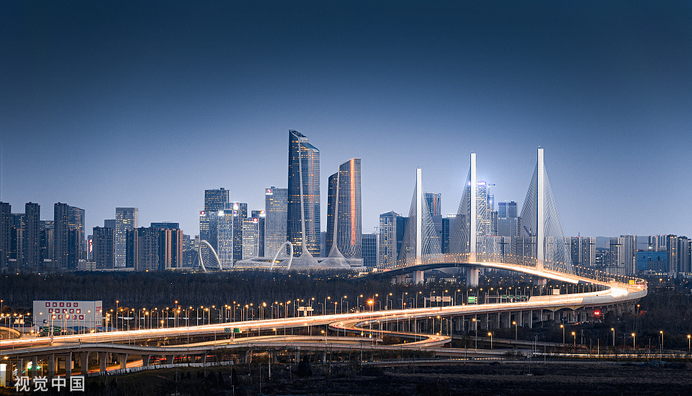
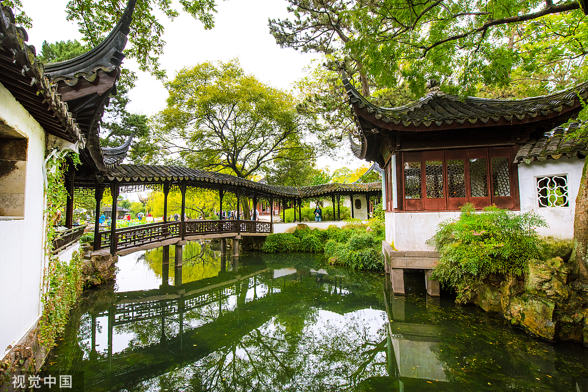

南方画廊
我们

重庆---->了解更多
重庆，简称“渝”，位于中国西南部，是一座充满活力的直辖市，地理环境独特，依山而建，形成了“8D魔幻城市”的景观。这里不仅有令人垂涎的美食，如麻辣鲜香的重庆火锅和风味独特的小面，还有众多历史与现代交融的热门景点，如洪崖洞、解放碑和长江索道。作为长江经济带的重要节点，重庆在制造业、电子信息产业等方面具有竞争力，同时也是巴渝文化的发祥地，拥有悠久的历史和丰富的文化遗产。这座城市以坚韧、开放、争先的精神不断发展，展现出独特的魅力。


湖南

湖南，位于中国中部，长江中游，因大部分区域处于洞庭湖以南而得名"湖南"。这里山水秀丽，历史悠久，文化底蕴深厚，素有"鱼米之乡"、"有色金属之乡"的美誉。
湖南是伟人故里，红色热土，也是少数民族聚居地，拥有丰富多彩的民族文化。湘菜、湘绣、湘剧、湘瓷等湖湘文化元素享誉中外。
探索"我的家乡"---芷江特色美食
湘菜是中国八大菜系之一，以香辣鲜美著称...
文化遗产
湖南拥有丰富的非物质文化遗产，如湘绣、土家族摆手舞、侗族大歌等。传统建筑如侗族风雨桥、凤凰古城等也极具特色。
旅游去处
湖南旅游资源丰富，有世界自然遗产张家界、历史文化名城凤凰、岳阳楼、韶山毛泽东故居等著名景点。



